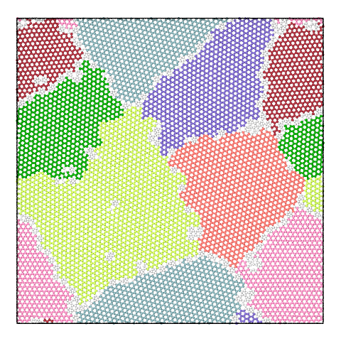

Grain segmentation
This modifier identifies the individual grains in a polycrystalline microstructure by grouping atoms in crystal regions having similar local lattice orientations. The algorithm works in three steps:
The local structural environment and orientation of each atom is determined using the Polyhedral template matching modifier.
A graph representation of the input structure is created using the neighbors of each atom, where each atom is a graph node and each neighbor bond is a graph edge.
Grains are formed by hierarchical clustering of the graph.
The modifier assigns a new property named Grain to each atom indicating which grain the atom belongs to
(grain numeric identifier). The special grain identifier 0 is assigned to atoms that do not belong to any grain.
The modifier furthermore computes a mean lattice orientation for each identified grain and outputs a list of
the grains as a data table with the following per-grain information:
Numeric grain identifier
Grain size (in terms of the number of atoms belonging to the grain; whether grain boundary atoms are included depends on the Adopt orphan atoms option)
Display color (see option Color particles by grain below)
Crystal phase of the grain (see PTM structure types)
Mean lattice orientation (expressed as 4-component quaternion similar to the per-atom lattice orientations computed by the PTM modifier)
The list of grains is ordered by size, starting with the largest grain (in terms of the number of atoms).
Caution
The grain segmentation algorithm is still considered experimental and has not been tested yet on many real-world microstructures. Please use this function with caution and help us improve the algorithm by reporting any issues you may observe when applying it to your simulations.
The grain segmentation algorithm is illustrated in the figures below. The local structural environment is determined for every atom using PTM (left). PTM also determines the local orientations (colored, middle) but does not explicitly group atoms into grains. Hierarchical clustering is used to identify grains (right).

Structure
Lattice orientation
Segmented grains
{kind=link}
{kind=link}
Algorithm selection
The modifier creates grains by performing hierarchical clustering on the nearest-neighbor atom graph. Two types of hierarchical clustering algorithms are implemented:
- Graph Clustering (automatic / manual)
Graph edge weights are initialized as \(\exp(-d^2/3)\), where \(d\) is the misorientation in degrees between two neighboring atoms. Grains are built up by contracting edges using the Node Pair Sampling method of Bonald et al..
This algorithm produces good segmentations in a range of microstructure types. It performs well on low-angle grain boundaries and can discriminate between grains and sub-grains. A drawback is that the merge distance threshold parameter does not have an intuitive physical meaning.
The automatic mode alleviates this problem by choosing a good merge threshold automatically for you using a statistical analysis of the sequence of graph merging steps, stopping the merging of crystallite clusters as soon as a deviation from the regular exponential behavior is observed.
- Minimum Spanning Tree
In this algorithm the graph gets replaced by its minimum spanning tree. The edge weights are the misorientation angles between neighboring atoms. Grains are built up by contracting edges in sorted order (by misorientation, low to high). The distance of a contraction (or merge) is simply the edge misorientation.
This is a fast algorithm which has lower memory usage. The merge distance has a simple interpretation (misorientation between neighboring atoms or crystal clusters) and is scale invariant. Drawbacks are that it can produce poor results in microstructures containing low-angle grain boundaries, and it performs poorly in the presence of local perturbations due to, e.g., thermal atomic displacements or elastic lattice distortions. This method is best suited for low-temperature simulations.
This approach is similar to that of Panzarino and Rupert. The key differences are the use of PTM (more robust structural determination), a faster algorithm (minutes instead of days), and the formulation as a hierarchical clustering problem (effects of cutoff choices are visible).
Parameters and options
- Log merge threshold
Specifies the maximum graph edge contraction distance and determines the resulting number and sizes of grains. A lower threshold produces more (and smaller) grains; a larger threshold produces fewer (and larger) grains. The scatter plot (“Log merge distance” vs “Merge size”) can be used to select an appropriate merge threshold value. If the grains are well-separated, the scatter plot will contain a dense cluster at low distances, and a few isolated points at higher distances. An ideal threshold lies after the dense cluster, but before the isolated points (see screenshot). Note that this threshold parameter can be set to a negative value, because it is specified on a logarithmic distance scale.
- Minimum grain size
Grains below this minimum number of atoms are dissolved. Atoms in sub-critical grains, which get dissolved, will become orphan atoms (see option Adopt orphan atoms).
- Adopt orphan atoms
After clustering has been performed by the algorithm, some atoms might not be assigned to a grain, so-called “orphan” atoms (according to Hoffrogge and Barrales-Mora). This includes atoms that are part of grain boundaries. This option lets the modifier assign these orphan atoms to the nearest grain.
- Handle coherent interfaces/stacking faults
This option lets the algorithm merge atoms having hexagonal crystal structures (e.g. HCP) with atoms having cubic structures (e.g. FCC) at stacking faults or other types of coherent crystal interfaces. Thus, stacking faults will become part of the surrounding grain if this option is enabled. Furthermore, atoms belonging to the cores of coherent twin boundaries will be attributed to one of the two adjacent grains.
- Color particles by grain
This option assigns each grain a unique color for easier visualization of the grain structure.
- Output bonds
Whether to visualize the edges of the initial neighbor graph as bonds between atoms. Local lattice disorientations are output as a bond property named
Disorientation, which may be visualized using the Color coding modifier of OVITO. This output option is mainly meant for debugging purposes and has large memory requirements. It is not recommended for large datasets.
Example
The panel below illustrates the effect of varying the merge threshold in a polycrystalline graphene sample, using the Graph Clustering algorithm. A good segmentation into 6 grains is achieved using a merge threshold of 14 (left). Reducing the threshold to 13.5 reveals a subgrain structure in the largest grain (middle). A further reduction of the threshold to 12.5 splits the largest grain into three subgrains (right).
Note that the difference between subgrains and grains is not well defined. It is therefore up to the user to decide upon the best threshold value.
6 grains |
7 grains |
8 grains |
|---|---|---|
|  |
See also
ovito.modifiers.GrainSegmentationModifier (Python API)